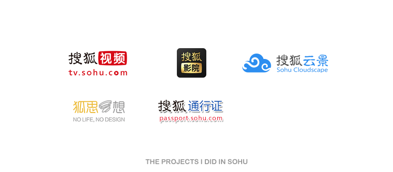

Hello, I am Shuai Zhou
I am looking for a UI & UX design full time job.

I will graduate from University of Cincinnati, DAAP College, School of Design in December 2015. The best of 25 design shcool in the world.
I came to US to study my master degree in 2012. I decided study abroad because I want to know more difference about the world around me and extend my horizons of thinking, but I don't have specific destination when I arrived US.

There has many of the meaningful courses and projects in my first year. For instance, the research methodology course, design strategy theory course, see word reading app project and P&G project for aged people. And also I saw our life was be changed by internet products, then I find what I want do.

I have a strong desire to learn more about the UI & UX design from the real projects. By a lucky coincidence, I have a very good opportunity to join Sohu Internet company which is one of biggest internet company in China. I dropped off shcool and go back to China, Working for HTML Group and UED Group.
After the work, I was back to shcool to finish my master degress. Now, I want find a full time job about the UI & UX design position.